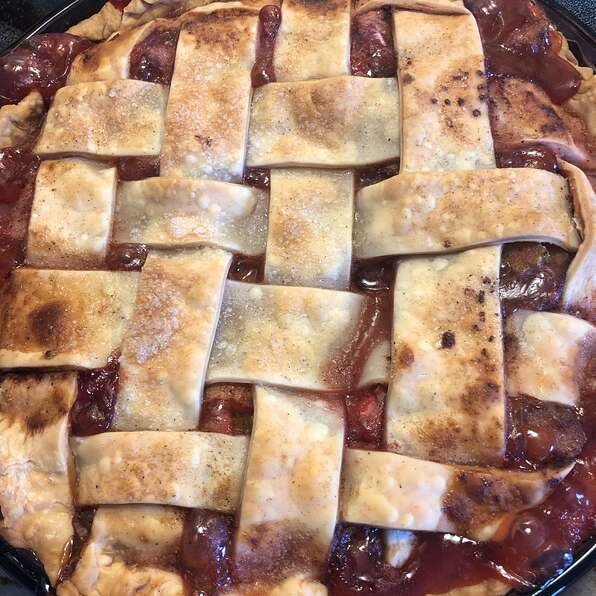

Strawberry Rhubarb Pie

Description
Pies are a dessert well known by everyone due to it's ability to contain many different
fillings (mostly fruits or cheese), being able to satisfy the desires of many people.
In this ocassion, we bring up to you a recipe to bake a Pie with Rhubarb and Strawberry
filling.
Ingredients (for 8 servings)
- 2 tablespoons cornstarch
- 2 tablespoon water
- 2 ½ cups of diced rhubarb
- 2 ½ cups of sliced fresh strawberries
- 1 ¼ cups of white sugar
- ½ teaspoon lemon juice
- ¾ teaspoon ground cinnamon
- 1 teaspoon vanilla extract
- 1 recipe pastry for a 9 inch double crust pie
- 1 egg white
- 1 tablespoon turbinado sugar (such as Sugar in the Raw®)
Steps
- In a bowl, whisk together the cornstarch with 1 tablespoon of water until thoroughly
combined. Stir in the rhubarb, strawberries, white sugar, lemon juice, cinnamon, and
vanilla extract. Allow the mixture to stand for 30 minutes.
- Preheat oven to 425 degrees F (220 degrees C). Place bottom crust into a 9-inch pie
dish. Roll the remaining crust out into a 10-inch circle on a floured work surface,
and set aside.
- Stir the filling, and pour into the prepared pie dish. Cut the remaining crust into
1-inch wide strips (use a scalloped edge pastry cutter for a prettier crust).
Moisten the rim of the filled bottom crust with a bit of water, and lay the two
longest strips in a cross in the middle of the pie. Working from the next longest
down to the shortest strips, alternate horizontal and vertical strips, weaving the
strips as you go. Press the lattice strips down onto the bottom crust edge to seal,
and trim the top crust strips neatly. Beat the egg white with 1 teaspoon of water
in a small bowl, and brush the entire lattice top with the beaten egg white.
Sprinkle with turbinado sugar. Wrap aluminum foil strips around the edges of the
pie.
- Bake in the preheated oven for 15 minutes; reduce heat to 375 degrees F (190
degrees C), and bake until the crust is browned and the filling is bubbling, 40 to
45 more minutes. Remove the aluminum foil for the last 10 minutes of baking time.
Allow pie to cool completely before serving.
Tradition
This pie is a traditional dessert in the United States. It is part of New England cuisine.
Rhubarb has long been a popular choice for pies in the Great Plains region, where fruits
were not always readily available. Rhubarb pies and desserts are popular in Canada as well,
as the rhubarb plant can survive in cold climates.
Return to main page